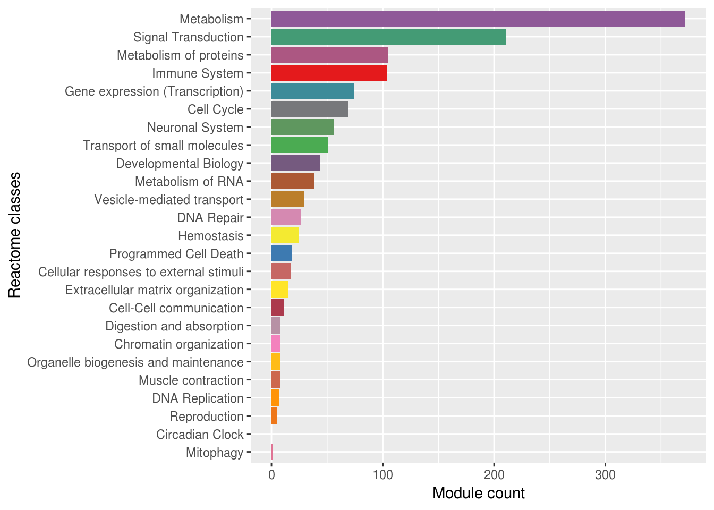
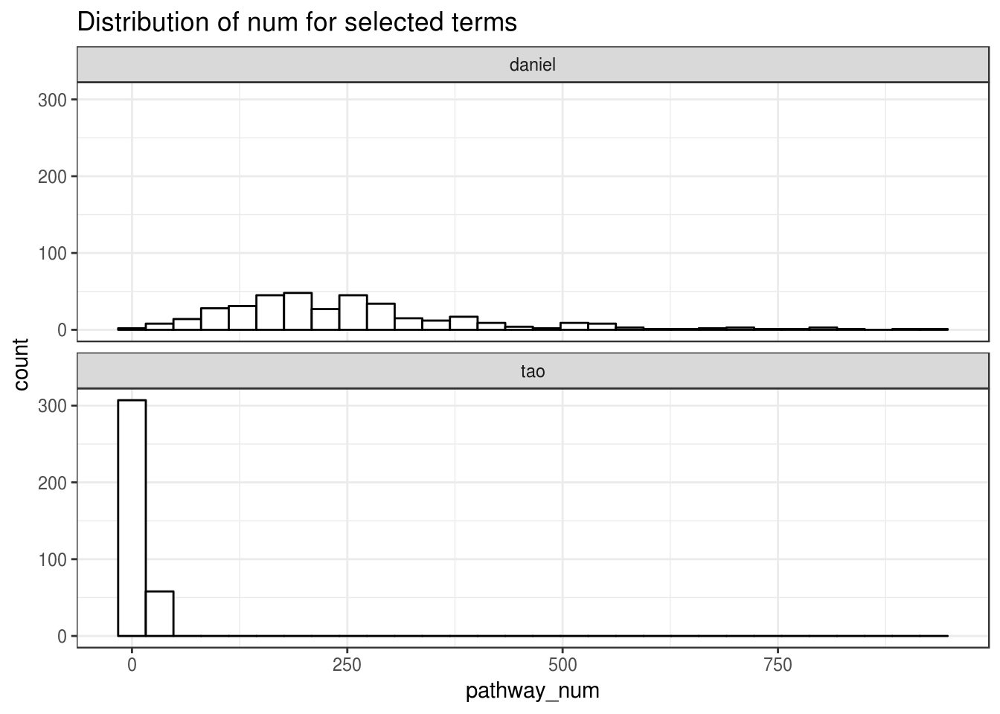
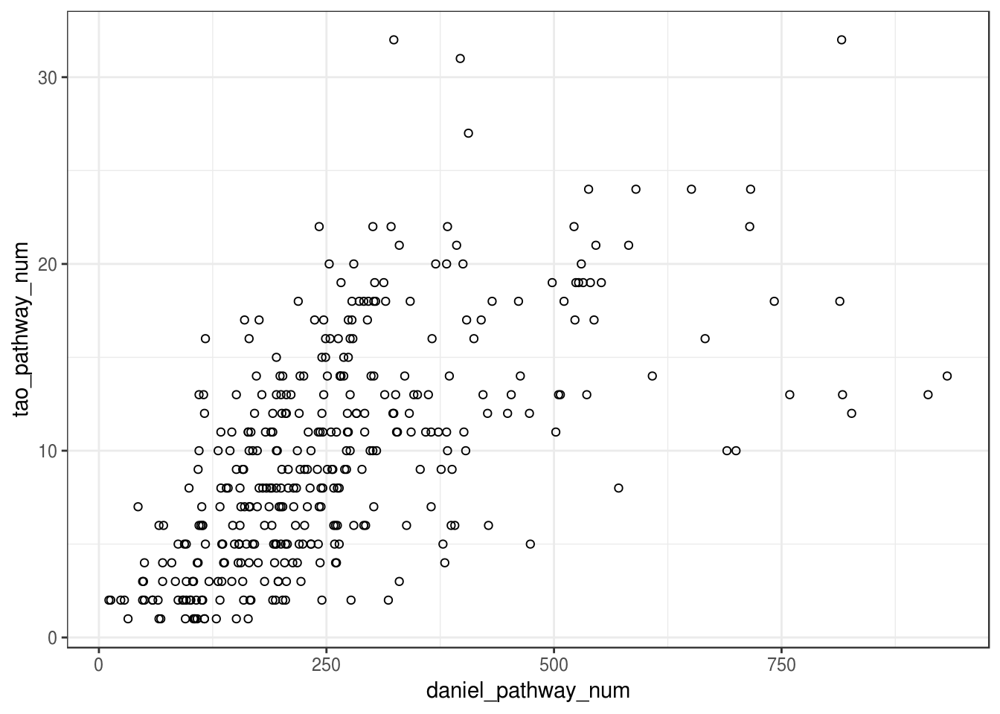
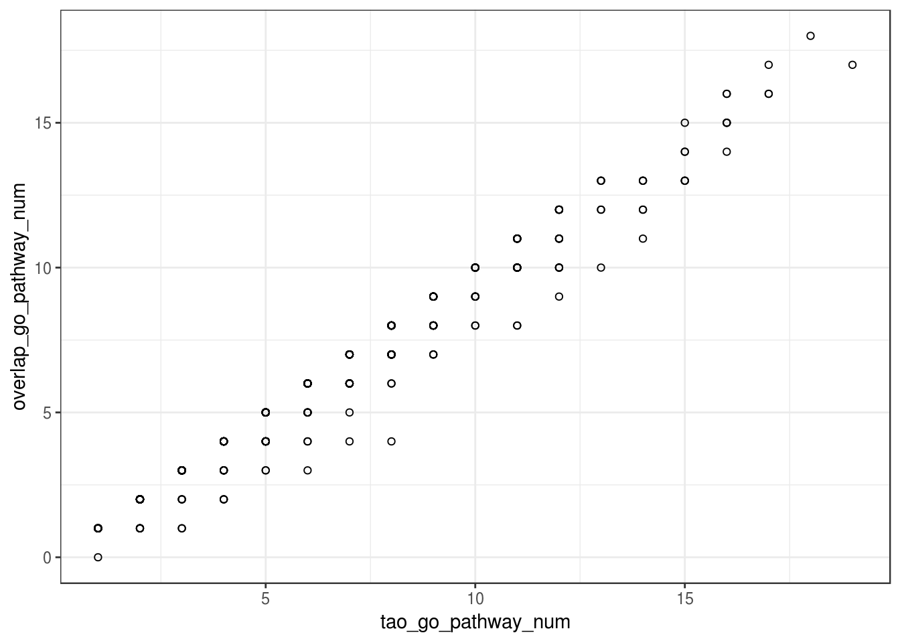
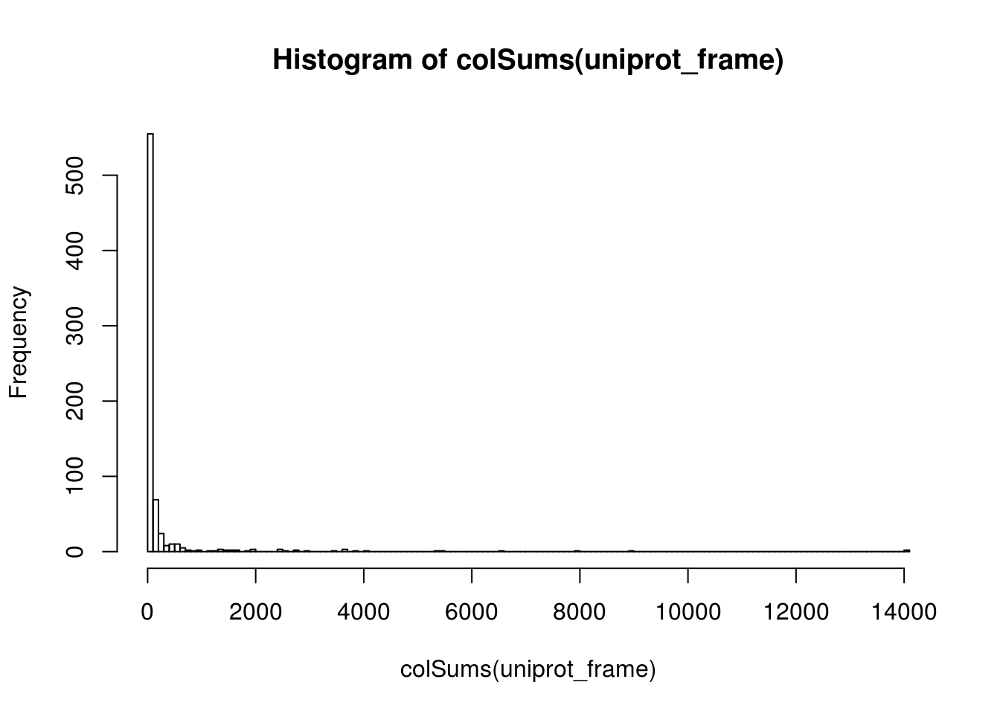
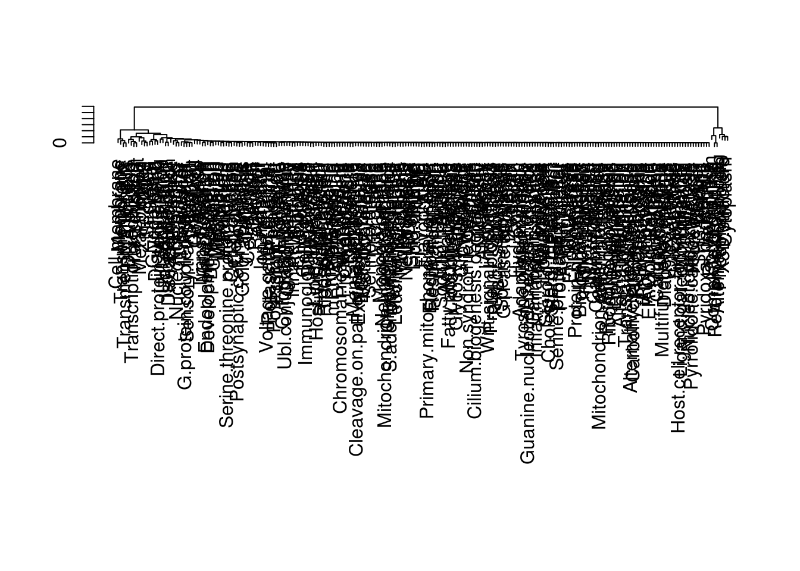

library(ggplot2)
library(ribiosPlot)
library(ribiosPlot)
library(RColorBrewer)
library(data.table)
Daniel_results_name="~/Disease_module_identification_DREAM_change/dream_consensus_modules.functional_enrichment.txt"
#Daniel_results=read.csv(Daniel_results_name,header = TRUE,sep = "\t",stringsAsFactors = FALSE)
Daniel_results=fread(Daniel_results_name,stringsAsFactors = FALSE)
Daniel_results=data.frame(Daniel_results)
Daniel_network_results=Daniel_results[Daniel_results$network=="PPI-STRING",]
GO_Rec_index=c(grep("GO",Daniel_network_results$termId),grep("REACTOME",Daniel_network_results$term))
Daniel_network_results=Daniel_network_results[GO_Rec_index,]
Tao_results= fread(file = "~/Disease_module_identification_DREAM_change/dream_consensus_modules_results_alpha0.5.csv",stringsAsFactors = FALSE)
Tao_results=data.frame(Tao_results)
Tao_reactome_results=Tao_results[grep("HSA",Tao_results$pathway_id),]reactome_classes=unique(Tao_reactome_results$Go_Reactome_root_names)
reactome_classes=unique(unlist(sapply(reactome_classes, function(x){strsplit(x,split = "#")[[1]]})))
reactome_colors=colorRampPalette(brewer.pal(9, "Set1"))(length(reactome_classes))
names(reactome_colors)=reactome_classes
reactome_class2moduleCount=data.frame(reactome_classes=reactome_classes,module_num=rep(0,length(reactome_classes)),names=reactome_classes)
rownames(reactome_class2moduleCount)=reactome_classes
for(i in 1:length(reactome_classes)){
reactome_class2moduleCount[reactome_classes[i],"module_num"]=sum(grepl(reactome_classes[i],Tao_reactome_results$Go_Reactome_root_names,fixed = TRUE))
}
disease_index=grep("Disease",rownames(reactome_class2moduleCount))
reactome_class2moduleCount_noDisease=reactome_class2moduleCount[-disease_index,]
reactome_classes_noDisease=reactome_classes[-disease_index]
reactome_colors_noDisease=reactome_colors[-disease_index]
reactome_class2moduleCount_ggplot=ggplot(data = reactome_class2moduleCount_noDisease,aes(x=reactome_classes,y=module_num,fill=names))+
geom_bar(stat = "identity")+
coord_flip()+
scale_x_discrete(limits=reactome_classes_noDisease[order(reactome_class2moduleCount_noDisease$module_num)])+ # !!!!!!!!!
scale_fill_manual(values=reactome_colors_noDisease[reactome_classes[order(reactome_class2moduleCount_noDisease$module_num)]])+
ylab("Module count")+
xlab("Reactome classes")+
theme(legend.position="none")
reactome_class2moduleCount_ggplot
tao_module_names=unique(Tao_results$module)
hist_tao=data.frame(module=tao_module_names,pathway_num=rep(0,length(tao_module_names)),row.names = tao_module_names,stringsAsFactors = FALSE)
for(i in 1:length(tao_module_names)){
hist_tao[tao_module_names[i],"pathway_num"]=sum(Tao_results$module==tao_module_names[i])
}
daniel_module_names=unique(Daniel_network_results$module)
hist_daniel=data.frame(module=daniel_module_names,pathway_num=rep(0,length(daniel_module_names)),row.names=daniel_module_names,stringsAsFactors = FALSE)
for (i in 1:length(daniel_module_names)) {
#print(i)
hist_daniel[daniel_module_names[i],"pathway_num"]=sum(Daniel_network_results$module==daniel_module_names[i])
}
combined_hist_frame=data.frame(name=c(rep('tao',nrow(hist_tao)),rep('daniel',nrow(hist_daniel))),
pathway_num=c(hist_tao$pathway_num,hist_daniel$pathway_num))
ggplot(combined_hist_frame,aes(x=pathway_num))+
geom_histogram(
bins=30,
colour="black", fill="white"
)+
facet_wrap(~name,ncol=1)+
theme_bw()+
ggtitle("Distribution of num for selected terms ")
common_module_names=intersect(tao_module_names,daniel_module_names)
scatter_plot=data.frame(module=common_module_names,row.names = common_module_names,
tao_pathway_num=hist_tao[common_module_names,]$pathway_num,
daniel_pathway_num=hist_daniel[common_module_names,]$pathway_num
)
cor(scatter_plot$tao_pathway_num,scatter_plot$daniel_pathway_num)## [1] 0.6077983ggplot(scatter_plot, aes(x=daniel_pathway_num, y=tao_pathway_num)) + geom_point(shape=1) +
theme_bw()
Daniel_network_GO_results=Daniel_network_results[grepl("GO",Daniel_network_results$termId),]
daniel_GO_module_names=unique(Daniel_network_GO_results$module)
Tao_go_results=Tao_results[grep("GO",Tao_results$pathway_id),]
tao_go_module_names=unique(Tao_go_results$module)
go_common_module_names=intersect(tao_go_module_names,daniel_GO_module_names)
tao_go_id=unique(Tao_go_results$pathway_id) #1949
daniel_go_id=unique(Daniel_network_GO_results$termId) #10838
total_overlap_go_id=intersect(tao_go_id,daniel_go_id) #1872
overlap_go_terms_frame=data.frame(matrix(0,nrow = length(go_common_module_names),ncol = 3),row.names = go_common_module_names)
colnames(overlap_go_terms_frame)=c('tao_go_pathway_num','daniel_go_pathway_num','overlap_go_pathway_num')
for(i in 1:length(go_common_module_names)){
tao_selected_pathwayIDs=Tao_go_results[Tao_go_results$module==go_common_module_names[i],"pathway_id"]
overlap_go_terms_frame[go_common_module_names[i],"tao_go_pathway_num"]=length(tao_selected_pathwayIDs)
daniel_selected_pathwayIDs=Daniel_network_GO_results[Daniel_network_GO_results$module==go_common_module_names[i],"termId"]
overlap_go_terms_frame[go_common_module_names[i],"daniel_go_pathway_num"]=length(daniel_selected_pathwayIDs)
overlap_go_terms_frame[go_common_module_names[i],"overlap_go_pathway_num"]=length(intersect(tao_selected_pathwayIDs,daniel_selected_pathwayIDs))
}
ggplot(overlap_go_terms_frame, aes(x=tao_go_pathway_num, y=overlap_go_pathway_num)) + geom_point(shape=1) +
theme_bw()
consensus_genesets=scan("./data/dream_consensus_modules.gmt",what = "",sep = "\n")
consensus_genesets=strsplit(consensus_genesets,split = "\t")
consensus_names=sapply(consensus_genesets, function(x){x[1]})
consensus_genesets=lapply(consensus_genesets,function(x){
x_genes=x[-c(1,2)]
return(x_genes)
})
names(consensus_genesets)=consensus_names
tao_reactome_module_names=unique(Tao_reactome_results$module)
tao_reactome_genesets=consensus_genesets[tao_reactome_module_names]
tao_reactome_all_genes=vector()
for (i in 1:length(tao_reactome_genesets)){
tao_reactome_all_genes=union(tao_reactome_all_genes,tao_reactome_genesets[[i]])
}
uniprot_frame=read.csv(file="~/Disease_module_identification_DREAM_change/uniprot_frame.csv",header = TRUE,row.names = 1) #19982 * 721
uniprot_all_genes=rownames(uniprot_frame)
uniprot_reactome_common_genes=intersect(uniprot_all_genes,tao_reactome_all_genes)
uniprot_frame=uniprot_frame[uniprot_reactome_common_genes,]
#uniprot_all_genes=rownames(uniprot_frame)
#uniprot_all_keywords=colnames(uniprot_frame)
#
test=hist(colSums(uniprot_frame),200)
sum(colSums(uniprot_frame)>100 )#& colSums(uniprot_frame)<150)## [1] 166sum(rowSums(uniprot_frame)>50)## [1] 0uniprot_frame_filted=uniprot_frame[,colSums(uniprot_frame)>50]
uniprot_all_genes=rownames(uniprot_frame_filted)
uniprot_all_keywords=colnames(uniprot_frame_filted)
uniprot_reactome_common_genes=intersect(uniprot_all_genes,tao_reactome_all_genes)
## cluster uniprot keywords
#raw=unname(uniprot_frame)
uniprot_frame_d <- dist(t(uniprot_frame_filted), method = "manhattan") # distance matrix
uniprot_frame_fit <- hclust(uniprot_frame_d, method="ward.D2")
plot(uniprot_frame_fit,ann = FALSE)
clusterCut <- cutree(uniprot_frame_fit,k=31) #k=40 h = 1000
clusterCut_groups=unique(clusterCut)
clusterCut_name_groups=lapply(clusterCut_groups, function(i){colnames(uniprot_frame_filted)[clusterCut==clusterCut_groups[i]]})
saveRDS(clusterCut_name_groups,"clusterCut_name_groups.rds")
uniprot_class_tao_defined=clusterCut_name_groups
names(uniprot_class_tao_defined)=c("other","Transport","Secreted_Signal","Transcription","G.protein.coupled.receptor","Nucleotide.binding",
"Phosphoprotein","Ubl.conjugation_Isopeptide.bond","Developmental.protein_Differentiation","Polymorphism",
"Transmembrane" ,"Transit.peptide_Mitochondrion","Complete/Reference.proteome","Nucleus",
"Glycoprotein","Zinc","Hydrolase","Transferase","Membrane","Disease.mutation","Endoplasmic.reticulum",
"Coiled.coil","Alternative.splicing","Metal.binding","Repeat","X3D.structure","Direct.protein.sequencing",
"Cytoplasm","Acetylation","Disulfide.bond","Cell.membrane")
#library(ape)
#hcd <- as.dendrogram(uniprot_frame_fit)
#plot(as.phylo(uniprot_frame_fit), type = "fan",show.tip.label = FALSE)
#uniprot_frame_reorder=uniprot_frame[,fit$order]
uniprot_hist=data.frame(matrix(0,nrow = length(names(uniprot_class_tao_defined)),ncol = length(tao_reactome_module_names)),
row.names =names(uniprot_class_tao_defined))
colnames(uniprot_hist)=tao_reactome_module_names
for(i in 1:length(tao_reactome_module_names)){
temp_genes=tao_reactome_genesets[[tao_reactome_module_names[i]]]
temp_common_genes=intersect(temp_genes,uniprot_reactome_common_genes)
for (j in 1:length(names(uniprot_class_tao_defined))) {
temp_uniprot_classes=uniprot_class_tao_defined[[names(uniprot_class_tao_defined[j])]]
if(length(temp_uniprot_classes)>1){
uniprot_hist[names(uniprot_class_tao_defined)[j],tao_reactome_module_names[i]]=sum(colSums(uniprot_frame_filted[temp_common_genes,temp_uniprot_classes]) )
}else{
uniprot_hist[names(uniprot_class_tao_defined)[j],tao_reactome_module_names[i]]=sum(uniprot_frame_filted[temp_common_genes,temp_uniprot_classes] )
}
}
}
#test=uniprot_hist[apply(uniprot_hist, 1, max)>30,]
test=uniprot_hist
library(pheatmap)
reactome_classes=unique(Tao_reactome_results$Go_Reactome_root_names)
reactome_classes=unique(unlist(sapply(reactome_classes, function(x){strsplit(x,split = "#")[[1]]})))
module2reactomeClasses=data.frame(row.names = c("module","reactome_class"))
for(i in 1:length(tao_reactome_module_names)){
#i=198
temp_classes=unique(Tao_reactome_results$Go_Reactome_root_names[Tao_reactome_results$module==tao_reactome_module_names[i]])
temp_classes=unique(unlist(sapply(temp_classes, function(x){strsplit(x,split = "#")[[1]]})))
for (j in 1:length(temp_classes)) {
module2reactomeClasses=rbind(module2reactomeClasses,data.frame(module=tao_reactome_module_names[i],reactome_class=temp_classes[j]))
}
}
test1=NULL
test1_classes=c()
test1_class_num=c()
for (i in 1:length(reactome_classes)) {
temp_modules=module2reactomeClasses$module[module2reactomeClasses$reactome_class==reactome_classes[i]]
if(length(temp_modules)>1){
temp_frame=test[,temp_modules]
}else{
temp_frame=data.frame(matrix(test[,temp_modules],ncol = 1))
}
test1_classes=c(test1_classes,rep(reactome_classes[i],ncol(temp_frame)))
test1_class_num=c(test1_class_num,ncol(temp_frame))
colnames(temp_frame)=paste(reactome_classes[i],1:ncol(temp_frame),sep="_")
if(i>1){
if(ncol(temp_frame)>1){
d <- dist(t(temp_frame), method = "euclidean") # distance matrix
fit <- hclust(d, method="centroid")
test1=cbind(test1,temp_frame[,fit$order])
}else{
test1=cbind(test1,temp_frame)
}
}else{
test1=temp_frame
}
}
color = grDevices::colors()[grep('gr(a|e)y', grDevices::colors(), invert = T)]
reactome_class_colors=sample(color,length(reactome_classes))
names(reactome_class_colors)=reactome_classes
hist_colors=unlist(sapply(1:length(reactome_classes), function(i){rep(reactome_class_colors[i],test1_class_num[i])}))
names(hist_colors)=colnames(test1)
annotation=data.frame(reactome_classes=test1_classes)
rownames(annotation)=colnames(test1)
anno_colors=list(reactome_classes=reactome_class_colors)
jpeg("./images/uniprotClass_ReactomeModule_heatmap0.5.jpg",quality = 100,pointsize = 30,width = 1000,height = 1200)
pheatmap(as.matrix(test1),cluster_cols = FALSE,cluster_rows = TRUE,show_colnames = FALSE,annotation = annotation,annotation_colors = anno_colors)
dev.off()## jpeg
## 3Image
Copyright © 2018 F.Hoffmann-La Roche Ltd-All rights reserved.